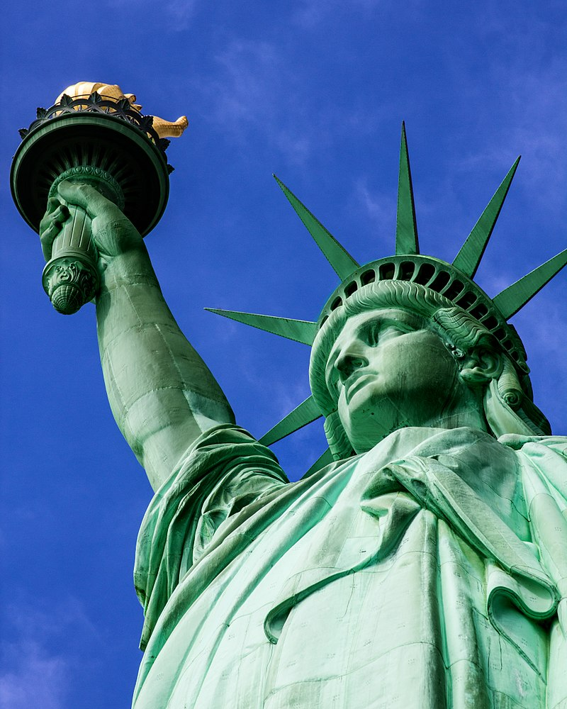
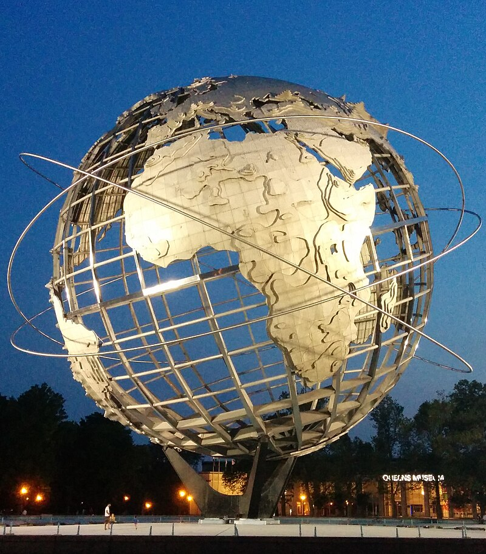

See relaible information here!
See relaible information here!
See relaible information here!
New York, often called New York City or NYC, is the most populous city in the United States, located at the southern tip of New York State on one of the world's largest natural harbors.
The city comprises five boroughs, each coextensive with a respective county. The city is the geographical and demographic center of both the Northeast megalopolis and the New York metropolitan area, the largest metropolitan area in the U.S. by both population and urban area. New York is a global center of finance and commerce, culture, technology, entertainment and media, academics and scientific output, the arts and fashion, and, as home to the headquarters of the United Nations, international diplomacy.
With an estimated population in 2023 of 8,258,035 distributed over 300.46 square miles (778.2 km2), the city is the most densely populated major city in the United States. New York City has more than double the population of Los Angeles, the nation's second-most populous city. With more than 20.1 million people in its metropolitan statistical area and 23.5 million in its combined statistical area as of 2020, New York City is one of the world's most populous megacities. The city and its metropolitan area are the premier gateway for legal immigration to the United States. As many as 800 languages are spoken in New York City, making it the most linguistically diverse city in the world. In 2021, the city was home to nearly 3.1 million residents born outside the U.S., the largest foreign-born population of any city in the world.
New York City traces its origins to Fort Amsterdam and a trading post founded on Manhattan Island by Dutch colonists around 1624. The settlement was named New Amsterdam in 1626 and was chartered as a city in 1653. The city came under English control in 1664 and was temporarily renamed New York after King Charles II granted the lands to his brother, the Duke of York,[24] before being permanently renamed New York in November 1674. New York City was the U.S. capital from 1785 until 1790.[25] The modern city was formed by the 1898 consolidation of its five boroughs: Manhattan, Brooklyn, Queens, the Bronx, and Staten Island.
Anchored by Wall Street in the Financial District, Manhattan, New York City has been called both the world's premier financial and fintech center and the most economically powerful city in the world. As of 2022, the New York metropolitan area is the largest metropolitan economy in the world, with a gross metropolitan product of over US$2.16 trillion. If the New York metropolitan area were its own country, it would have the tenth-largest economy in the world. Despite having a 24/7 rapid transit system, New York also leads the world in urban automobile traffic congestion. The city is home to the world's two largest stock exchanges by market capitalization of their listed companies: the New York Stock Exchange and Nasdaq. New York City is an established safe haven for global investors. As of 2023, New York City is the most expensive city in the world for expatriates and has by a wide margin the highest U.S. city residential rents; and Fifth Avenue is the most expensive shopping street in the world. New York City is home by a significant margin to the highest number of billionaires, individuals of ultra-high net worth (greater than US$30 million), and millionaires of any city in the world.
In 1664, New York was named in honor of the Duke of York (later King James II of England). James's elder brother, King Charles II, appointed the Duke as proprietor of the former territory of New Netherland, including the city of New Amsterdam, when the Kingdom of England seized it from Dutch control.>
In the pre-Columbian era, the area of present-day New York City was inhabited by Algonquians, including the Lenape. Their homeland, known as Lenapehoking, included the present-day areas of Staten Island, Manhattan, the Bronx, the western portion of Long Island (including Brooklyn and Queens), and the Lower Hudson Valley.
The first documented visit into New York Harbor by a European was in 1524 by explorer Giovanni da Verrazzano.[40] He claimed the area for France and named it Nouvelle Angoulême (New Angoulême). A Spanish expedition, led by the Portuguese captain Estêvão Gomes sailing for Emperor Charles V, arrived in New York Harbor in January 1525 and charted the mouth of the Hudson River, which he named Río de San Antonio ('Saint Anthony's River')
In 1609, the English explorer Henry Hudson rediscovered New York Harbor while searching for the Northwest Passage to the Orient for the Dutch East India Company. He sailed up what the Dutch called North River (now the Hudson River), named first by Hudson as the Mauritius after Maurice, Prince of Orange.Hudson claimed the region for the Dutch East India Company.
In 1614, the area between Cape Cod and Delaware Bay was claimed by the Netherlands and called Nieuw-Nederland ('New Netherland'). The first non-Native American inhabitant of what became New York City was Juan Rodriguez, a merchant from Santo Domingo who arrived in Manhattan during the winter of 1613-14, trapping for pelts and trading with the local population as a representative of the Dutch colonists.
A permanent European presence near New York Harbor was established in 1624, making New York the 12th-oldest continuously occupied European-established settlement in the continental United States, with the founding of a Dutch fur trading settlement on Governors Island. In 1625, construction was started on a citadel and Fort Amsterdam, later called Nieuw Amsterdam (New Amsterdam), on present-day Manhattan Island.The colony of New Amsterdam extended from the southern tip of Manhattan to modern-day Wall Street, where a 12-foot (3.7 m) wooden stockade was built in 1653 to protect against Native American and English raids. In 1626, the Dutch colonial Director-General Peter Minuit, as charged by the Dutch West India Company, purchased the island of Manhattan from the Canarsie, a small Lenape band,[50] for "the value of 60 guilders" (about $900 in 2018). A frequently told but disproved legend claims that Manhattan was purchased for $24 worth of glass beads.
Following the purchase, New Amsterdam grew slowly. To attract settlers, the Dutch instituted the patroon system in 1628, whereby wealthy Dutchmen (patroons, or patrons) who brought 50 colonists to New Netherland would be awarded land, local political autonomy, and rights to participate in the lucrative fur trade.
This program had little success.Since 1621, the Dutch West India Company had operated as a monopoly in New Netherland, on authority granted by the Dutch States General. In 1639-1640, in an effort to bolster economic growth, the Dutch West India Company relinquished its monopoly over the fur trade, leading to growth in the production and trade of food, timber, tobacco, and slaves (particularly with the Dutch West Indies).
In 1647, Peter Stuyvesant began his tenure as the last Director-General of New Netherland. During his tenure, the population of New Netherland grew from 2,000 to 8,000. Stuyvesant has been credited with improving law and order; however, he earned a reputation as a despotic leader. He instituted regulations on liquor sales, attempted to assert control over the Dutch Reformed Church, and blocked other religious groups from establishing houses of worship.
New York City is situated in the northeastern United States, in southeastern New York State, approximately halfway between Washington, D.C. and Boston. Its location at the mouth of the Hudson River, which feeds into a naturally sheltered harbor and then into the Atlantic Ocean, has helped the city grow in significance as a trading port. Most of the city is built on the three islands of Long Island, Manhattan, and Staten Island.
During the Wisconsin glaciation, 75,000 to 11,000 years ago, the New York City area was situated at the edge of a large ice sheet. The erosive forward movement of the ice (and its subsequent retreat) contributed to the separation of what is now Long Island and Staten Island.
That action left bedrock at a relatively shallow depth, providing a solid foundation for most of Manhattan's skyscrapers.The Hudson River flows through the Hudson Valley into New York Bay.
Between New York City and Troy, New York, the river is an estuary. The Hudson River separates the city from New Jersey. The East River—a tidal strait—flows from Long Island Sound and separates the Bronx and Manhattan from Long Island. The Harlem River, another tidal strait between the East and Hudson rivers, separates most of Manhattan from the Bronx. The Bronx River, which flows through the Bronx and Westchester County, is the only entirely freshwater river in the city.